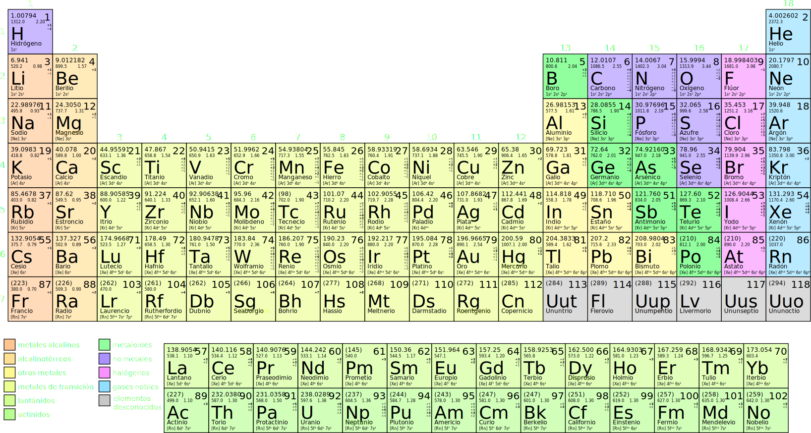

Tiempo, relojes, átomos y lásers
Marcelo Luda - DEILAP
¿Que es el tiempo?
Vemos cómo experimentamos el paso del tiempo
Calendario
Relojes mecánicos
Reloj de péndulo
Navegación
Trenes
Expansión de la red ferroviaria en Argentina
1913

Trenes 2
Problema: ¿Cómo podemos tener osciladores idénticos?
Átomos
Tabla periódica de los elementos
